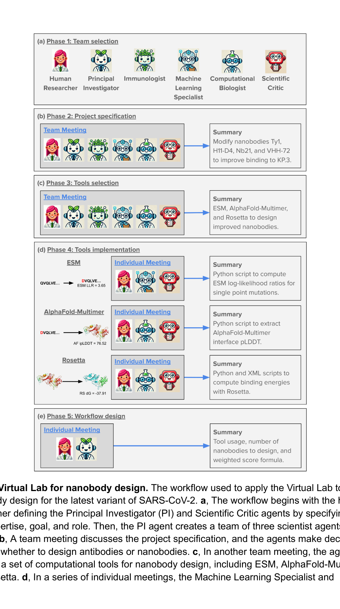
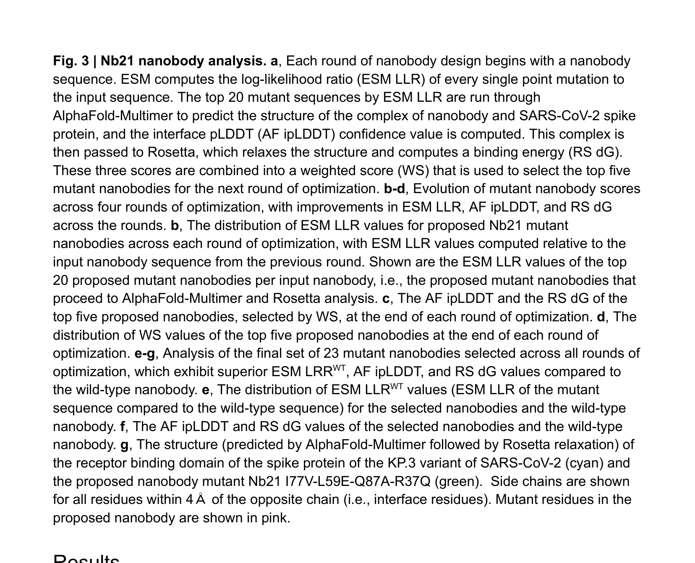
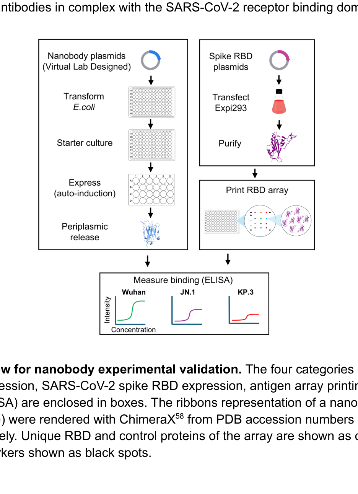

Essence

Fig. 1 | Virtual Lab 아키텍처. (a) 에이전트 설계 워크플로우 — PI, Scientific Critic, 과학자 에이전트를 Title/Expertise/Goal/Role 4가지 기준으로 정의. (b) 팀 미팅 워크플로우. (c) 개별 미팅 워크플로우.
Virtual Lab은 LLM(GPT-4o) 기반 멀티 에이전트 시스템과 인간 연구자의 협업으로 학제간 과학 연구를 수행하는 프레임워크이다. PI 에이전트가 면역학자·계산생물학자·ML 전문가 에이전트를 이끌며, ESM + AlphaFold-Multimer + Rosetta를 조합한 나노바디 설계 파이프라인을 에이전트가 자체적으로 설계했다. 92개 돌연변이 나노바디를 생성하여 실험 검증한 결과, 93.5%가 양호한 발현량(>5 mg/L)을 보였고, Nb21 돌연변이가 JN.1 RBD에 결합(EC50 2.0 ng/mL)하고 KP.3 RBD에도 결합 증거를 보였다.
How

Fig. 2 | 나노바디 설계를 위한 Virtual Lab 워크플로우. ESM → AlphaFold-Multimer → Rosetta 3개 도구를 조합한 반복적 최적화 파이프라인.

Fig. 3 | Nb21 나노바디 분석. 각 라운드의 ESM LLR, AlphaFold ipLDDT, Rosetta dG 점수와 가중 점수(WS) 기반 후보 선택 과정.
- 에이전트 아키텍처: GPT-4o 기반. PI(AI for research 전문) + Scientific Critic(오류 검증) + 3명의 과학자 에이전트(면역학, 계산생물학, ML). 각 에이전트는 Title, Expertise, Goal, Role 4가지 기준으로 정의
- 5단계 워크플로우: (1) 팀 선발 — PI가 개별 미팅에서 과학자 에이전트 자동 생성. (2) 프로젝트 사양 — 팀 미팅에서 나노바디 vs 항체, 대상 변이체(KP.3) 등 결정. (3) 도구 선택 — ESM, AlphaFold-Multimer, Rosetta 선정. (4) 도구 구현 — 개별 미팅에서 코드 작성. (5) 워크플로우 설계 — 3개 도구 통합
- 반복적 최적화: 4개 시작 나노바디에서 4라운드 반복. 각 라운드: ESM LLR → 상위 20개 → AlphaFold-Multimer ipLDDT → Rosetta dG → WS로 상위 5개 선택 → 다음 라운드. 최종 나노바디당 23개(총 92개) 선택
- 병렬 미팅: 동일 미팅을 높은 temperature(0.8)로 여러 번 병렬 실행 후, 낮은 temperature(0.2)로 merge하여 창의성과 일관성을 동시 확보

Fig. 4 | 나노바디 실험 검증 워크플로우. 발현, 정제, 결합 프로파일링, 친화도 측정의 4단계 검증 과정.
- 실험 검증: E. coli 발현 → 용해성 단백질 periplasm 분리 → ELISA로 Wuhan/BA.2/JN.1/KP.2.3/KP.3 RBD 패널 결합 프로파일링
Evaluation
Novelty: 5/5 Technical Soundness: 4/5 Significance: 5/5 Clarity: 4/5 Overall: 5/5
총평: AI 에이전트를 단순한 도구가 아닌 연구 설계자로 격상시킨 패러다임 전환적 연구로, Nature 게재에 걸맞은 실험적 검증과 실용적 성과를 갖추었다. 특히 에이전트가 자체적으로 계산 파이프라인을 설계하고 실제 결합하는 나노바디를 발견한 것은 AI for Science의 새로운 이정표이다.